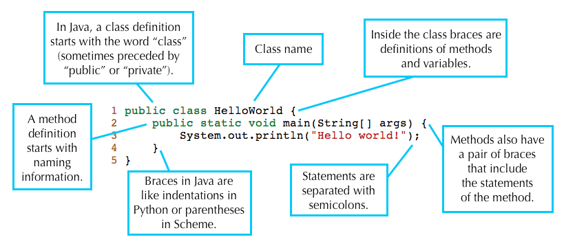

Navigation
A. Setup
Welcome to CS 61B! First things first, let's get ourselves all set up for the semester.
If you become stuck, don't be discouraged; your TA is ready to help! The best place to ask for help is in the actual lab, so come if you're not physically here already!
Make sure to complete the bullets below in their entirety before moving on to the next section. IF YOU DECIDE TO SKIP THIS SECTION, YOU WILL RUN INTO TROUBLE.
- If you need to set up your personal computer, read lab1b.
- Read this doc about instructional accounts.
- Complete the git setup parts A-C.
- Get a text editor (we recommend Sublime Text or something similar).
B. Java Compilation & Development
Java and Compilation
Java is sometimes called a "compiled language" while Python is called an "interpreted language". However, it is likely that neither of these terms make any sense yet, which is good, since they really don't make any sense. In most Java implementations, programs are compiled (translated into a form that is easily executed) in a separate, user-visible step from being executed, while most Python implementations give users the impression that the actual programs that they write are executed directly. These are not properties of the languages, however; Java can be interpreted and Python can be compiled. But as often happens, even in CS, people get sloppy in their terminology and fail to distinguish between programming languages and their implementations.
The Java implementations we use compile Java source code (what is written by
the programmer) into Java class files containing virtual byte code, which may
then be executed by a separate program. (Often, this separate program,
called java, does a mix of interpreting the class file and compiling it into
machine code and then having the bare hardware execute it.)
Let's see an example. Here is the same "Hello World" program that you used to test your setup on the Lab 1b page.
public class HelloWorld {
public static void main(String[] args) {
System.out.println("Hello world!");
}
}Here is what the corresponding Java compiled code (called bytecode) looks like. The virtual machine can interpret this to run the program.

Why Compilation?
At this point, you may be wondering why Java is (usually) compiled. Compilers are quite helpful for several reasons:
They can check for errors prior to runtime (program execution). The Java compiler will catch and report errors like:
- type errors, which can be produced by giving functions the wrong objects
as parameters (like a
Stringinstead of aint) - syntax errors, which can be caused by forgetting syntactical elements like parentheses or braces
Catching these and many other types of errors prior to runtime helps to prevent many of the possible bugs caused by programmer error, making Java programs more stable before they are run.
- type errors, which can be produced by giving functions the wrong objects
as parameters (like a
- Compilers can help speed up programs. Programs run by interpreters can be slow because interpreters must parse text that is understandable to humans and translate it into an executable form. Furthermore, for various engineering reasons, this executable form is generally not actual machine code (directly executable by the hardware), but some other intermediate form that another program (the interpreter) then executes. A compiler does this translation work once and saves the instructions to a file variously called a binary, object file, or (in the case of Java) a class file. As such, Java programs do not have to translate the code at runtime, decreasing the overall runtime of the code.
There are many other reasons some languages have compilers, some of which you will learn by taking CS 61C. But for now, you will just need to know how to compile and run your Java program.
Compiling Java Programs
There are many different Java
compilers, but we'll be using
javac from the command line in this class. As stated in Lab 1b, javac is
included in Oracle's Java Development Kit (JDK) and should be accessible to you
now.
To compile a Java file called File.java, you would type the following command
into your terminal:
$ javac File.javaYou can also add some helpful options, which are called flags to the compile command. Full documentation is available here.
javac -g File.javaThe '-g' flag is one of the most helpful flags because it will generate debugging information, including information about local variables. This is good for testing programs.
Note: If you change a file after compiling, you must recompile the file to reflect the change.
Running Java Programs
Compiling your program using the command above should give you .class files.
For example, let's pretend that you've compiled File.java. This would generate
a new file called File.class. Opening the .class files will show you
something like the bytecode in the image at the very beginning of this lab.
Once you have your File.class file, you can run your Java program with this
command in your terminal:
java FileYou do not type File.class. Doing so is a common mistake that will cause an
error message like this:
Error: Could not find or load main classYou also don't type File.java either.
C. Writing Java Programs
Java is Object-Oriented
Java is an object-oriented programming language. What this means is that you'll organize your programs around the types of data that it manupulates. Each of these data types describes a class of objects and how these objects will interact with each other. Those of you who took 61A may recognize that term as having been applied to Python/Scheme. Java takes OOP a step further. In Java, all functions (or methods, as the OOP inventors renamed them in order to make-believe they were inventing an entirely new concept) and all variables reside in some class definition.
Format of a Java Program
Every Java source file contains a class, interface, or "enum" (a special kind of class). For now, let's just discuss class definitions. A class definition provides the name of the class and serves as a template for objects. In addition, a class definition contains variables and methods that define the behavior of that class.
Here is a deconstruction of the aforementioned "Hello World" program:

A Java program consists of a collection of one of more of these Java files. At
least one of the classes in a complete Java program must contain a method called
main having the header shown in the HelloWorld code above. This main
method is where execution of your program begins.
This is why running the HelloWorld program prints out Hello world!. The
main method in the HelloWorld class is being run when you type java
HelloWorld into the terminal.
Comments in Java
There are two formats for comments in a Java program:
Single-line comments start with two consecutive slash characters and continue to the end of the line
// This is a single-line comment
In general, we use these only for temporary comments, or to add explanatory text to a difficult block of code. Our style rules require that you not use them in projects you hand in.
Multi-line comments start with /* and end with */
/* This is a multi-line comment */To improve readability, you can add single asterisks at the start of each line after the first.
/* This is a * multi-line * comment */Finally, a subclass of the multiline comments called documentation comments or javadoc comments are intended to provide specifications of methods (functions), classes, and instance variables. Our style rules, in fact, require them. For example.
/** Returns the current size of the list. */ public int size() { ... }
D. Using Git
IF YOU DID NOT DO SECTIONS A-C OF THE GIT GUIDE, THIS NEXT PART WILL NOT WORK. PLEASE DO THE GIT GUIDE FIRST.
Leap-Year Program
For our second Java program, we'll be writing a program that prints out whether or not a year is a leap year or not. A leap year is either:
- divisible by 400 or
- divisible by 4 and not by 100.
For example, 2000 and 2004 are leap years. 1900, 2003, and 2100 are not leap years.
Your Java file should be called LeapYear.java. These lines should go into the
main method of the LeapYear class. Your class name should match the name of
your file. Your program should include the line:
int year = 2000;If you're not sure where to start, you can copy and paste lines from this file (all of these lines may not be needed and their order is scrambled).
Some Java Vocabulary in Leap Year
- The
%operator implements remainder. Thus, the value ofyear % 4will be 0, 1, 2, or 3. - The
!=operator compares two values for inequality. The code fragmentif (year % 4 != 0)reads as "if the remainder when dividingyearby 4 is not equal to 0." - The method
System.out.printlnprints its argument to "standard output" (which is, in this case, your terminal window) when called. - When one of the arguments of the
+operator is a string, the arguments are concatenated as strings. String concatenation is the operation of joining two character strings end-to-end.
Testing Leap Year
When you've arranged the lines properly and compiled successfully, running the program should print out the following line:
2000 is a leap year.You can test your program with other year values by changing the line
int year = 2000;to other numbers. Once your program is correct, save it as LeapYear.java.
You'll be submitting it at the conclusion of this lab.
General Git Workflow
As you proceed below, be sure to understand what each command does since you'll be using these commands all semester (if not for longer!). Read the output (if any) before entering the next command, in case unexpected behavior occurs (it might mean that you accidentally skipped a step!).
You must first
fetchfrom thesharedremote in order to get the starter code for lab1. You will do this every time new projects and assignments are released.cd repo # If not already there git fetch shared git merge -m "Start Lab 1" shared/lab1 git pushThis copies our skeleton code for lab1 into your local repository (in a subdirectory called
lab1). It then transfers this branch to your central repository. Now that you've done this, you canpullthese changes from any other local repository that you've cloned from your central repository.- Now let's make changes to the code within our local repository. Since we've
already written some code, let's just move
LeapYear.javainto thelab1directory. Now we stage and commit
LeapYear.javato tell Git to take a snapshot of it's current state and to remember what changes we've made up to this point.git add lab1/LeapYear.java git commit -a -m "Completed LeapYear.java"Once again, now we push these changes to the central repository so that your changes are uploaded to the course server. Your changes will also be available to
pull.git push
Get into the habit of saving your files and doing the git commit step often
(i.e. every 15 minutes). It can save your skin when you mess things up, since it
allows you to back out of changes and to see what you have changed recently.
Basically, right when you sit down to work in your repository, first git pull
to make sure you are starting with the most recent code. While you are working,
frequently commit. When you are finished, git push so all your changes are
uploaded and ready for you to pull again next time. Since pushing uploads to our
course server, you must push in order for the staff to get a hold of your work,
whether that is to ask for help or to have your assignments graded.
Complete Lab 1
If you get confused with the git commands in this section, please refer to Section D of the git guide.
Let's make some more changes! Now that you have the skeleton, you should see a
file in the lab1 directory called Year.java.
Fill it out using code similar to your implementation for LeapYear.java, but
this time however, notice that year is a parameter for the isLeapYear method
rather than a local variable within a method.
After you have filled out that file, you should make a commit since you have
finished making a notable modification. First, check the status of your local
repository by typing:
git statusYou will see the file that you just changed in red text, which is Git telling you that you have outstanding changes that have not been added yet.
Go ahead and add the file. Check the status again and it should have turned
into green text. Then, proceed to making your commit.
Running Unit Tests
At some points in your development, you may want to run the autograder. For this lab, we have given you an explicit program to show how this sort of thing works. The file
AGTestYear.javacontains a number of unit tests, a term that refers to simple tests of individual components (units) of a program. In this case, there is one component in question: yourisLeapYearprogram.You cannot run this file on your local machine yet, so this part must be done on the instructional account (either on the lab computer or by ssh'ing). However, in later labs, we will remedy this. (If you are switching from another machine to a lab computer at this point, remember to
push/pullfirst!)Compile the autograder with:
cd repo/lab1 # If not already there javac -g AGTestYear.javaAnd run it with:
java AGTestYearIf your program was correct, then you'll get an encouraging message like:
Time: 0.014 Ran 4 tests. All passed.Otherwise, you'll get messages such as:
There were 2 failures: 1) test400(AGTestYear) should be leap year at AGTestYear.test400:12 (AGTestYear.java) 2) ...If you didn't get an error message, try deliberately breaking your program by inserting a bug and try testing it again (remember to compile it before trying to test it!). Be sure to undo the damage before submitting.
Note 1: In later assignments, we may hide the autograder from you, and send you email about the results. We'll explain how that works at a later date.
Note 2: This autograder may not be running the full number of tests that will be used to grade your assignment. (This is especially true for the projects.) It should be used as a sanity check, not as a thorough test. You should always write your own unit tests (and we will go over how to do this later).
Submitting
- If you are ready to submit your lab, first make sure that all your work is
committed. You can do so by calling upon
git statusonce again; it should tell you that your working directory is clean. Now
tagyour latest commit as a submission. Tags in Git are symbolic names given to specific commits.Create a tag for this commit.
git tag lab1-0For our purposes, tag names shall have the form of the assignment name, followed by a sequence number.
Now push your commits and tags to your central repository so that we can see them, too.
git push git push --tags- You won't receive any indication of your submission this time, so do not worry about that.
- You can continue updating your work and submitting newer versions by following the same procedures (remember to always commit before you tag). Just increase the sequence number to keep the submissions distinct: lab1-1, lab1-2, etc. The actual numbers don't matter; the largest is your official latest submission at any time.
These last few sub-sections were a bare-bones walkthrough of Sections D and E of the Git guide and we used the commands described there to complete this lab. Be sure to refer back to the Git guide to ensure that you submit all future assignments properly. You will find Section F of the Git guide to be a useful cheatsheet.
E. Recap
- You can use
javacto compile your code andjavato run it. - Java is an object-oriented language. Every Java file must contain either a class, interface, or enumeration.
- When running a Java program, the
mainmethod is where execution begins. Thismainmethod can call other methods/classes in the program. - Git is a version control system that tracks the history of a set of files in the form of commits.
- Commit often and use informative commit messages.
- Fetch from the
sharedremote repository to get or update starter code for assignments. - Tag a commit and push it and your tags to submit assignments.